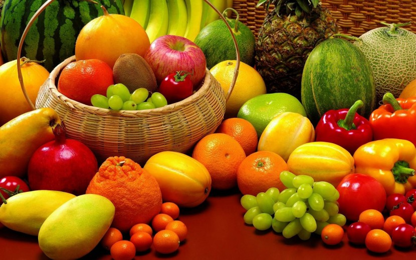
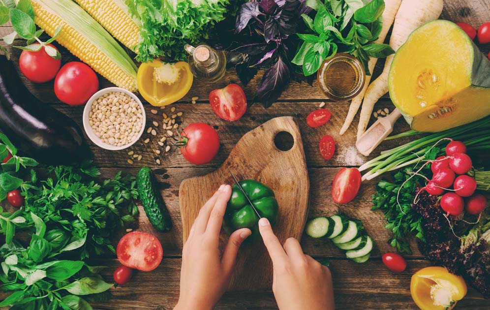
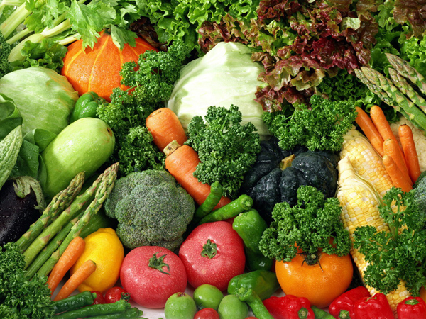

Trái cây có rất nhiều chất dinh dưỡng, chất xơ và các vitamin nên nó sẽ giúp bạn khỏe mạnh cả về thể chất lẫn tinh thần, giảm nguy cơ mắc bệnh tật. Bổ sung trái cây vào chế độ ăn uống hàng ngày sẽ đem lại những lợi ích sức khỏe tuyệt vời. Có nhiều lý do để bạn ăn trái cây mỗi ngày, nhưng hãy nhớ rằng tiêu thụ trái cây tươi sẽ tốt hơn nhiều so với các loại trái cây bảo quản hay đóng hộp. Trái cây là chất xơ phong phú và nó có lượng calo thấp nên nó cũng đặc biệt có lợi cho những người muốn giảm cân mà vẫn tràn đầy năng lượng.



Tiêu thụ rau xanh hàng ngày sẽ giúp tăng cường thị lực, kiểm soát cân nặng, ngăn ngừa ung thư và phòng chống các vấn đề về tim mạch. Theo Boldsky, chế độ ăn uống hàng ngày của con người nên bao gồm rau củ quả, đặc biệt là rau lá xanh cùng nhiều mặt hàng thực phẩm khác. Nó được gọi là thực phẩm kỳ diệu vì chứa tất cả các chất dinh dưỡng lành mạnh, thiết yếu cho cơ thể như vitamin, khoáng chất, canxi, sắt, chất xơ… Ngoài việc giúp bạn giảm cân, rau xanh giảm nguy cơ bệnh tiểu đường, tăng huyết áp và ung thư. Nhưng làm thế nào để tiêu thụ nhiều rau xanh mỗi ngày? Một số nghiên cứu khuyên bạn nên ăn 2-3 chén rau (nấu, hấp, chiên, xào, hay ăn sống) mỗi ngày cho người trưởng thành là tốt nhất.